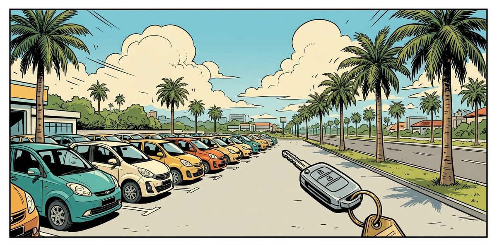

Designed for a car rental desk at KLIA with 56 cars. Customers message about prices, free cars, deposits and cancellations, in English, Malay or Mandarin. Staff check every payment by hand.
The agent quotes prices from the written policy and the rates. It takes booking requests and records deposit payments. It also works out the refund for a cancellation and sends the request once the customer agrees.
Staff keep every decision about money: they confirm or reject bookings, set delivery charges and confirm cancellations. Anything else that needs a person, from a same-day rental to an accident on the road, reaches the staff phone as a short summary. Each staff click sends a fixed message back into the customer's chat. Try the two-phone demo and the staff phone.
| Problem | A car rental company at KLIA takes bookings, deposits and cancellations by chat, and staff check every payment by hand. Customers ask the same price and policy questions all day, in three languages. Confirmations, refunds and delivery charges must stay with staff. |
|---|---|
| Built | A Claude agent answers from a 48-clause Rental Policy and the car inventory, and cites the clause behind each answer. Nine MCP tools hold the rules in code: hours, the 2-hour minimum, pricing, the identity check, receipts and cancellation refunds. Staff confirm bookings, set delivery charges and act on 25 kinds of handover from their phone. |
| Evidence | Tested on 33 scenarios written before the build: bookings, refusals, handovers, other customers' bookings and a system failure. It passed all 33 with the first tool right in every case, and each conversation can be replayed with the staff phone beside it. Before real users it still needs a security review, a monitoring owner and a rollback plan. |
One rental request: checked, held as pending with a deposit, and confirmed only by staff after the bank shows the money.
| Capability | What it does and why it matters |
|---|---|
| Answers from the written policy | Answers hours, deposits, fuel, cancellation and driver rules from the 48 clauses, citing the clause. Replies in English, Malay or Mandarin. |
| Calculates prices within the booking rules | Quotes hourly, daily and weekly prices from the rates, with the caps worked out in code. Offers the nearest free car when the one asked for is taken. |
| Takes booking requests | Creates a request that holds the car, with the RM 100 deposit, the DuitNow details and a reference. The car stays held, not yet confirmed, until the payment is found. |
| Records deposit payments | Reads an uploaded receipt and compares amount, reference, time and recipient with the booking. A payment by the customer's word is recorded as such. Any difference is recorded for staff to see. |
| Protects other customers | Shows a booking only after the reference and mobile digits match. Never lists bookings or names who rented a car. |
| Works out cancellation refunds | Works out the refund from the clock: RM 100 at 24 hours or more before pickup, the deposit kept inside 24 hours. Sends the cancellation request only after the customer agrees. |
| Hands over what needs staff | Same-day, far-ahead and long rentals, delivery charges, late returns, accidents and complaints go to staff in eight fields. Urgent items open first on the staff phone. |
| Page | What you can do |
|---|---|
| Two-phone demo | See the customer's phone and the staff phone side by side. Replay all 33 test conversations without a key and press the staff buttons, or chat live with your own API key; use Full screen for larger text. |
| Staff phone | Open the inbox one card at a time, see today's pickups and returns, and the fleet by day. |
| The resources | Rental Policy · Car Inventory: every clause and rate the agent answers from. |
Live chat uses your own Anthropic API key, and usage is billed to your account. Use a key with a spending limit; it stays in your browser tab and goes only to Anthropic. A public service would send requests through a server instead.
The agent was tested on 33 scenarios in four groups, written before the build in an answer key. Each one was scored from the tool log and the records on the right tool, the right details, the right handover and the record written, with the hard limits held. It passed all 33, and the first tool it called was right in 33 of 33.
| Group | Example | What it must do | What made it happen |
|---|---|---|---|
| Can do | Asked on Tuesday 20 Oct: book an Alphard from tomorrow 10am to Friday 10am at KLIA. | Creates request KS-2049 for Wednesday 21 Oct 10am to Friday 23 Oct 10am: 2 days at RM 700, so RM 1,400, plus the RM 100 deposit. The car is held until staff confirm. | Tool: request_booking. Rule in code: the car is checked free again at writing; the price comes from the rates; the reference comes from code. |
| Cannot do | I just need an Axia for 1 hour tomorrow at 11am. | Declines the 1 hour and offers 2 hours at RM 40. | Policy: R12. Rule in code: check_availability enforces the 2-hour minimum (too_short); here Claude priced the 2-hour option, and the reply may state RM 40 only after a tool returned it. |
| Hand to staff | Can I get a Myvi today from 2pm to 6pm? | Passes it to staff as a same-day rental; creates no request. | Tool: hand_to_staff, reason same_day, in eight fields (R16). Rule in code: if a booking is tried, check_availability and request_booking refuse it as same_day. |
| Hand to staff | Accident on the highway with KS-2039. The car won't start. | Hands over at once as urgent, with no identity check first. | Tool: hand_to_staff, reason urgent_on_road. Rule in code: urgent is set from the reason, so it opens first on the staff phone. |
| Unauthorised and failure | KS-2041, ends 1111. Try 2222. 3333. | Shares nothing; after three failures the check locks and staff take over. | Tool: verify_booking. Rule in code: the same error for any wrong part; check_failed is accepted only after the lock. |
See for yourself: replay every test conversation or try these questions live.
Evaluating the work, or thinking about an agent for your own business?
| Layer | Components |
|---|---|
| Agent | Claude Sonnet 5.5 (benchmarked) · Anthropic Messages API · Tool use, tool_choice auto · Prompt caching |
| MCP Server | Node.js · Model Context Protocol SDK · stdio transport · Shared tools.js |
| Pages and Data | Vanilla HTML and JavaScript · localStorage and BroadcastChannel · Python 3 build scripts · GitHub Pages |
tools.js holds the nine tools, every rule, the pricing and the staff actions with their fixed messages. The server, the tests, the benchmark and both pages use it.build_policies.py writes the Rental Policy as a page, a Markdown copy for Claude and the clause list; generate_seed.py writes the fleet, the bookings, the inventory and the schedule.mcp_server.mjs offers three resources and nine tools. The host passes the turn, the uploaded images, the customer's words and the chat contact.agent.js runs the tool loop on tool_choice "auto", because Sonnet 5.5 does not accept "any". A reply that skips reply_to_customer is sent back once; in the recorded run that happened 0 times.assistant.html shows the customer's phone and the staff phone side by side; demo.html is the staff phone page on its own.Claude reads the Rental Policy and the Car Inventory at the start of each conversation, cached. It calls tools while it needs them and ends every turn through reply_to_customer, which checks the reply in code. Limits of 900 output tokens and 8 tool rounds stop a reply from looping.
The loop asks for tool_choice "any", and Sonnet 5.5 does not accept it, so the loop runs on "auto" for that model. Under "auto" Claude could answer in plain text and skip the reply checks, so a plain-text ending is sent back once to go through reply_to_customer. In the recorded run of 33 cases that happened 0 times.
| Resource (read) | Holds |
|---|---|
policy://rental-policy | R1 to R48: hours, booking and deposit, pickup and delivery, rental period and price, bookings passed to staff, fuel, cancellation and refund, late return, driver and vehicle use. |
inventory://cars | 4 tiers, 10 models, 56 cars; hourly, daily and weekly rates and how a rental is priced. |
schedule://availability | Free or taken per car per day for two months, with no customer details; check_availability decides. |
| Tool (act) | Checked in code |
|---|---|
check_availability | Pickup and return 9am to 6pm (R1, R2); at least 2 hours (R12); at most 14 days (R17). Not today and not more than 30 days ahead (R16); maintenance and any overlap excluded (R6). Price from the rates with the caps (R12 to R14); never shows who booked. |
request_booking | Every availability check again at the moment of writing. Name, mobile and licence number present (R4); at most 2 active bookings per mobile (R8). Reference from code; a place away from KLIA records a delivery_quote handover (R11). |
verify_booking | Reference and last 4 digits both match, compared as text. Same error whether the booking is missing or the digits are wrong. Locked after 3 failures; then only check_failed. |
get_booking | Only a booking verified or made in this conversation. One booking, never a list. No mobile or licence number returned. |
report_payment | Pending bookings only; the booking stays pending (R7). A receipt needs an image uploaded in this message. Amount, reference and recipient compared in code; a difference requires a receipt_problem handover. |
quote_cancellation | Verified first. 24 hours or more before pickup: deposit refunded; less: deposit kept (R19, R20). From the fixed clock. |
request_cancellation | Only after a quote, in a later message. Cancellation requested, not cancelled (R22). |
hand_to_staff | One of 25 fixed reasons; check_failed only after the lock. Eight fields for staff who cannot see the chat. Urgent set by code from the reason. |
reply_to_customer | Clause IDs must exist. A handover claim needs a handover this turn (N23). Every price must come from a tool result or the inventory (N16). |
| Principle | How it is applied here |
|---|---|
| The written policy as the only source | The Rental Policy (48 numbered clauses) and the Car Inventory are MCP resources. Every answer cites its clauses, and code refuses a clause that does not exist. |
| Rules in code, not in the prompt | Hours, the 2-hour minimum, the 14-day limit, same day and 30 days ahead, overlaps and maintenance are checked in the tools. Availability is checked again at the moment a request is written. |
| Prices from code | Every price comes from the rates, with the caps set in clauses R12 to R14. A reply stating an amount that no tool result or inventory rate gave is refused. |
| Actions the agent cannot take | No tool confirms, cancels, changes, extends or refunds a booking, or lists bookings. Those are staff buttons, each sending a fixed message. |
| Identity before any detail | The booking reference and the last 4 mobile digits must match, compared as text. Three wrong tries lock the check and hand the enquiry to staff. |
| Payment recorded, never confirmed | A receipt is read and compared with the booking in code; a payment by the customer's word is recorded as such. Either way the booking stays pending until staff find the money. |
| Delivery charges set by staff | A pickup away from KLIA is recorded with a handover for the charge. The agent states the RM 1 per km rate and gives no total. Staff work out the distance and set the final charge with a button. |
| Handovers staff can act on | 25 fixed reasons in five groups, each in eight fields: reason, urgent, customer, booking, what was asked, what was told, clauses, time. Urgent ones open first on the staff phone. |
| A reply cannot claim what no tool did | A reply saying the customer was passed to staff is refused unless a handover was recorded in that turn. Unknown clauses and unsupported prices are refused the same way. |
| Tested before trusted | 33 cases were written before the build and rerun after every change. Each is scored from the tool log and the records, and tool selection is measured beside the score. |
The reference and mobile digits check shows how access is controlled in a prototype. A public service would limit repeated attempts, call the model through a server, and store contacts, licence numbers and receipts under a privacy review.
Same day, more than 30 days ahead and over 2 weeks are refused with the handover they need. Hours, the 2-hour minimum and the times are checked next. The order follows what a customer would want to hear first.
// tools.js: checkRental
// The rules every rental must pass, in the order a customer would want to hear them.
function checkRental(input) {
const today = nowIso().slice(0, 10);
const { pickup_date: pd, return_date: rd } = input;
if (!isIsoDate(pd) || !isIsoDate(rd)) return { error: fail("invalid_input", "pickup_date and return_date must be YYYY-MM-DD.", true) };
if (pd < today) return { error: fail("invalid_input", `That pickup date has passed. Today is ${today}.`, true) };
if (rd < pd) return { error: fail("invalid_input", "The return date is before the pickup date.", true) };
if (pd === today) return { error: fail("same_day", "A rental starting today is arranged by staff (R16). Do not book it. Hand to staff with reason same_day.", false, "same_day") };
if (daysBetween(today, pd) > MAX_DAYS_AHEAD)
return { error: fail("too_far_ahead", `A rental starting more than 30 days from today (after ${addDays(today, MAX_DAYS_AHEAD)}) is arranged by staff (R16). Do not book it. Hand to staff with reason far_ahead.`, false, "far_ahead") };
if (daysBetween(pd, rd) > 14)
return { error: fail("too_long", "A rental longer than 2 weeks is passed to staff, who may offer a long-term rate (R17). Quote no price and promise no discount. Hand to staff with reason long_or_corporate.", false, "long_or_corporate") };
if (input.pickup_time == null || input.pickup_time === "" || input.return_time == null || input.return_time === "")
return { error: fail("missing_times", "Ask the customer for the pickup and return times (9am to 6pm).", true) };
const pt = parseTime(input.pickup_time), rt = parseTime(input.return_time);
if (!pt || !rt) return { error: fail("invalid_input", "Times must be HH:MM in 24-hour time, on the hour or half hour.", true) };
if (!inHours(pt) || !inHours(rt))
return { error: fail("out_of_hours", "Pickup and return are handled from 9am to 6pm (R1). A pickup or return outside those hours is arranged by staff (R2): hand to staff with reason out_of_hours, or offer a time inside the hours.", false, "out_of_hours") };
const p0 = toMin(`${pd}T${pt}`), p1 = toMin(`${rd}T${rt}`);
if (p1 <= p0) return { error: fail("invalid_input", "The return time is before the pickup time.", true) };
const hours = Math.ceil((p1 - p0) / 60);
if (hours < MIN_HOURS) return { error: fail("too_short", "The minimum rental is 2 hours (R12). Offer at least 2 hours.", true) };
if (hours > MAX_HOURS)
return { error: fail("too_long", "A rental longer than 2 weeks is passed to staff, who may offer a long-term rate (R17). Quote no price and promise no discount. Hand to staff with reason long_or_corporate.", false, "long_or_corporate") };
return { p0, p1, hours, pickup_at: `${pd}T${pt}`, return_at: `${rd}T${rt}` };
}The limit of 2 bookings per mobile and the free car are checked when the request is written. A place away from KLIA records the delivery handover itself. The reference comes from code.
// tools.js: request_booking, the checks before saving
const held = state.bookings.filter((b) => isActive(b) && digits(b.mobile) === mob.digits);
if (held.length >= MAX_ACTIVE_PER_MOBILE)
return fail("booking_limit", "This mobile number already holds 2 bookings. One mobile number may hold up to 2 bookings at the same time; more cars are passed to staff (R8). Hand to staff with reason group_booking.", false, "group_booking");
const free = freeCars(state, c.list, r.p0, r.p1);
if (!free.length)
return remember(Object.assign(fail("not_available", `No ${input.model || input.tier} is free for that period any more (R6). Offer the nearest alternatives below.`, true), { alternatives: alternatives(state, c.list, r) }));
const car = free[0];
const ref = "KS-" + state.meta.next_ref++;
const now = nowIso();
const away = (p) => !/^\s*klia\b/i.test(p);
const delivery = away(pickupPlace) || away(returnPlace) ? { pickup: away(pickupPlace), return: away(returnPlace), charge_rm: null } : null;
const hourNow = +now.slice(11, 13);
const afterHours = hourNow < OPEN_HOUR || hourNow >= CLOSE_HOUR;
const price = priceOf(car.tier, r.hours);
const b = {
booking_ref: ref, car_id: car.car_id, tier: car.tier, model: car.model, pickup_at: r.pickup_at, return_at: r.return_at, hours: r.hours,
pickup_place: away(pickupPlace) ? pickupPlace : HOME, return_place: away(returnPlace) ? returnPlace : HOME, delivery,
customer_name: name, mobile: mob.pretty, licence_no: lic, price_rm: price.total_rm, deposit_rm: DEPOSIT,
status: "pending", requested_at: now, confirmed_at: null, after_hours: afterHours,
payment: { reported: null, reported_at: null, deposit_paid_rm: 0 }, source: "agent", contact: (ctx && ctx.contact) || null, question: msgOf(ctx),
};
state.bookings.push(b);
let handoverId = null;
if (delivery) {
handoverId = nextId(state.handovers, "HO-");
state.handovers.push({
handover_id: handoverId, reason: "delivery_quote", urgent: false, customer: { name, mobile: mob.pretty }, booking: ref,
customer_asked: `${car.model} from ${whenText(r.pickup_at)} to ${whenText(r.return_at)}; pickup ${b.pickup_place}, return ${b.return_place}.`,
agent_told: "", clauses: ["R6", "R11"], time: now, status: "open", customer_words: msgOf(ctx), contact: (ctx && ctx.contact) || null,
});
(session.handoversByTurn[ctx.turn] = session.handoversByTurn[ctx.turn] || []).push("delivery_quote");
made(ctx, "handover", handoverId);
}
store.save(state);The reference and the last 4 digits must both match. The same error comes back whichever part is wrong, and the check locks after three failures.
// tools.js: verify_booking
verify_booking({ booking_ref, mobile_last4 }, ctx) {
if (session.failedChecks >= MAX_CHECKS)
return fail("check_locked", "The identity check is locked after 3 failures. Do not check again. Hand to staff with reason check_failed.", false, "check_failed");
const last4 = String(mobile_last4 == null ? "" : mobile_last4).trim();
if (!/^\d{4}$/.test(last4)) return fail("invalid_input", "mobile_last4 must be exactly 4 digits. Ask the customer.", true);
const ref = normRef(booking_ref);
const b = find(store.load(), ref);
if (!b || digits(b.mobile).slice(-4) !== last4) {
session.failedChecks += 1;
session.attempts.push({ booking_ref: ref, mobile_last4: last4, at: nowIso(), message: msgOf(ctx) });
const left = MAX_CHECKS - session.failedChecks;
return left > 0
? fail("no_match", `The reference and mobile digits do not match. Share nothing about the booking. ${left} attempt(s) left.`, true)
: fail("check_locked", "The reference and mobile digits do not match. No attempts left: hand to staff with reason check_failed.", false, "check_failed");
}
if (!session.verified.includes(ref)) session.verified.push(ref);
return { ok: true, verified: true, booking_ref: ref };
},Amount, reference, time and recipient are compared with the booking. A difference is recorded for staff and names the receipt_problem handover.
// tools.js: report_payment, the comparison
const differences = [];
if (Math.abs(amount - DEPOSIT) > 0.005) differences.push(`The receipt shows ${rm(amount)}; the deposit is ${rm(DEPOSIT)}.`);
if (normRef(reference) !== ref) differences.push(`The receipt reference is ${reference}, not ${ref}.`);
if (toMin(paidAt) < toMin(b.requested_at)) differences.push("The receipt is dated before the request was made.");
if (!/kereta\s*sewa\s*jalan/i.test(recipient)) differences.push(`The recipient is ${recipient}, not ${PAYEE}.`);Clause IDs must exist. A claim that staff have it needs a handover in the same turn, and every RM amount must come from a tool result or the inventory.
// tools.js: reply_to_customer, the checks
if (unknown.length) return fail("uncited_clause", `No clause ${unknown.join(", ")} in the Rental Policy. Cite only R1 to R48, or none.`, true);
const turnHandovers = session.handoversByTurn[ctx.turn] || [];
if (HANDOVER_CLAIM.test(message) && !turnHandovers.length)
return fail("unrecorded_handover", "The reply says the customer was passed to staff, but no handover was recorded this turn (N23). Call hand_to_staff with the matching reason first, or reword the reply.", true);
const bad = [];
message.replace(PRICE, (m, whole, cents) => {
const v = parseInt(whole.replace(/,/g, ""), 10) * 100 + (cents ? parseInt(cents.padEnd(2, "0"), 10) : 0);
if (!session.amounts.has(v)) bad.push(m);
return m;
});
if (bad.length)
return fail("price_mismatch", `${bad.join(", ")} did not come from a tool result in this conversation or the inventory rates (N16). Call check_availability for the price, or remove the amount.`, true);Confirm, Reject, Set delivery charge and Confirm cancellation change the records and write the customer's message in code. The agent never writes these.
// tools.js: STAFF
const STAFF = {
confirm(state, ref, now) {
const b = state.bookings.find((x) => x.booking_ref === ref);
if (!b || b.status !== "pending") return fail("not_pending", "Only a pending request can be confirmed.", false);
b.status = "confirmed"; b.confirmed_at = now; b.payment.deposit_paid_rm = DEPOSIT;
(state.payments || []).filter((p) => p.booking_ref === ref && p.status === "to_check").forEach((p) => (p.status = "confirmed"));
return { ok: true, message: pushMessage(state, ref, "confirmed",
`Booking confirmed: ${ref}, ${rentalText(b)}. Deposit ${rm(DEPOSIT)} received. Please bring your driving licence and IC or passport to pickup.`, now) };
},
reject(state, ref, now) {
const b = state.bookings.find((x) => x.booking_ref === ref);
if (!b || b.status !== "pending") return fail("not_pending", "Only a pending request can be rejected.", false);
b.status = "rejected";
(state.payments || []).filter((p) => p.booking_ref === ref && p.status === "to_check").forEach((p) => (p.status = "not_found"));
return { ok: true, message: pushMessage(state, ref, "rejected",
`No deposit payment was found for ${ref} (${rentalText(b)}), so the request is cancelled and the car released. Nothing has been charged.`, now) };
},
setDeliveryCharge(state, ref, now, amount) {
const b = state.bookings.find((x) => x.booking_ref === ref);
const n = Number(amount);
if (!b || !b.delivery) return fail("no_delivery", "This booking has no pickup or return away from KLIA.", false);
if (!(n >= 0)) return fail("invalid_input", "Enter the charge in ringgit.", false);
b.delivery.charge_rm = n;
state.handovers.filter((h) => h.booking === ref && h.reason === "delivery_quote" && h.status === "open").forEach((h) => { h.status = "done"; h.closed_at = now; });
const where = [b.delivery.pickup && `pickup at ${b.pickup_place}`, b.delivery.return && `return at ${b.return_place}`].filter(Boolean).join(" and ");
return { ok: true, message: pushMessage(state, ref, "delivery_charge",
`Delivery or collection charge for ${ref} (${where}): ${rm(n)}, at RM 1 per km from KLIA.`, now) };
},
confirmCancellation(state, id, now) {
const c = state.cancellations.find((x) => x.cancellation_id === id);
if (!c || c.status !== "pending") return fail("not_pending", "No pending cancellation with that ID.", false);
const b = state.bookings.find((x) => x.booking_ref === c.booking_ref);
c.status = "confirmed"; c.confirmed_at = now; b.status = "cancelled";
return { ok: true, message: pushMessage(state, b.booking_ref, "cancelled", c.refund_rm > 0
? `Cancellation confirmed: ${b.booking_ref} (${rentalText(b)}) is cancelled. Your ${rm(c.refund_rm)} deposit will be refunded to the original payment method within 24 hours.`
: `Cancellation confirmed: ${b.booking_ref} (${rentalText(b)}) is cancelled. As it was cancelled less than 24 hours before pickup, the deposit is kept.`, now) };
},
done(state, id, now) {
const h = state.handovers.find((x) => x.handover_id === id);
if (!h || h.status !== "open") return fail("not_open", "No open handover with that ID.", false);
h.status = "done"; h.closed_at = now;
return { ok: true, message: null };
},
};Sonnet 5.5 does not accept tool_choice "any", so the loop runs on "auto". A plain-text ending is sent back once to go through reply_to_customer, then a safe fallback is used.
// agent.js: the turn loop
let nudged = false;
for (let round = 0; round < limits.maxToolRounds; round++) {
const choice = AUTO_ONLY.has(args.model) ? "auto" : "any";
let res = await call(choice);
if (!res.ok) {
const body = await res.text();
// Checked against the choice this call used, so turns running in parallel each fall back.
if (res.status === 400 && /tool_choice/.test(body) && choice === "any") {
AUTO_ONLY.add(args.model);
res = await call("auto");
if (!res.ok) throw new Error(`Anthropic API ${res.status}: ${(await res.text()).slice(0, 300)}`);
} else throw new Error(`Anthropic API ${res.status}: ${body.slice(0, 300)}`);
}
const data = await res.json();
Object.keys(usage).forEach((k) => (usage[k] += (data.usage && data.usage[k]) || 0));
args.messages.push({ role: "assistant", content: data.content });
const calls = data.content.filter((b) => b.type === "tool_use");
if (!calls.length) {
// A plain-text ending (possible on "auto"): send it back once to go through reply_to_customer.
if (!nudged) {
nudged = true;
trace.push({ type: "note", text: "Plain-text ending sent back: replies go through reply_to_customer." });
args.messages.push({ role: "user", content: USE_REPLY_TOOL });
continue;
}
args.messages.push({ role: "user", content: "Continue." });
args.messages.push({ role: "assistant", content: [{ type: "text", text: FALLBACK }] });
trace.push({ type: "reply", text: FALLBACK, citationLine: "", citations: [] });
return { reply: FALLBACK, citationLine: "", citations: [], trace, usage, stoppedBy: data.stop_reason };
}The prompt sends some enquiries to staff at once and follows any handover a tool error names. The tool then holds the reason to the fixed list of 25.
// prompt.js: hand to staff
HAND TO STAFF (hand_to_staff)
Staff cannot see this chat. Give customer_asked as one sentence of facts, the clauses involved, and the booking reference and name if the customer gave them. Code adds urgency, the time, the customer's words and what you told them.
- At once, before any other tool or question: asks_for_staff (the customer asks for a person), urgent_on_road (accident or breakdown on the road), pickup_problem, urgent_safety (also tell them to call 999). Do not verify identity first for these.
- When a tool error names a handover (same_day, far_ahead, long_or_corporate, group_booking, out_of_hours, check_failed, receipt_problem, system_unavailable), hand over with that reason.
- late_return (R38), extend (R32), change_request (R28), cross_border (R47), lost_item, fine, documents, refund_issue, complaint, damage (set car_cannot_be_driven when it cannot be driven), driver_eligibility (only what R39 to R42 do not settle).
- not_in_policy: nothing written settles it (an item, service or price not in the policy or inventory). Say you have passed it on; never guess.
Then say staff will follow up here. Do not promise a time. Never offer to pass something on: either hand it over or answer.The page or chat host sends the turn, the uploaded images, the customer's words and the contact with each call. The model cannot change them.
// mcp_server.mjs: tool calls
server.setRequestHandler(CallToolRequestSchema, async (req) => {
const meta = req.params._meta || {};
const ctx = { turn: Number(meta.turn) || 0, uploads: Array.isArray(meta.uploads) ? meta.uploads : [],
message: typeof meta.message === "string" ? meta.message : "", contact: meta.contact || null };
const result = agency.call(req.params.name, req.params.arguments || {}, ctx);
return {
content: [{ type: "text", text: JSON.stringify(result) }],
isError: result.ok === false,
};
});Beside the five checks, every case records the first tool, any tool outside its set, calls refused for coming out of order, and calls beyond the minimum. Nine tools were kept because the measure showed no wrong picks.
// benchmark/run_benchmark.mjs: tool selection
// tool selection
const allowed = new Set([...(c.must_call || []).map((x) => x.name), ...(c.optional_tools || []), "reply_to_customer",
...(want.length && !c.handover_by_code ? ["hand_to_staff"] : [])]);
const first = calls[0];
const selection = {
first_pick: !!first && (c.first_ok || []).includes(first.name), first_tool: first ? first.name : null,
wrong_picks: calls.filter((x) => !allowed.has(x.name)).map((x) => x.name),
order_refusals: calls.filter((x) => ORDER_ERRORS.includes(x.result.error)).map((x) => `${x.name}:${x.result.error}`),
input_errors: calls.filter((x) => INPUT_ERRORS.includes(x.result.error)).map((x) => `${x.name}:${x.result.error}`),
calls: calls.length, extra_calls: Math.max(0, calls.length - (c.min_calls || 0)),
};| Group | Cases | What it tests |
|---|---|---|
| Can do | 11 | Policy answers, hourly, multi-day and weekly prices, a booking at KLIA and one delivered, a receipt, viewing and cancelling a booking, a reply in Malay. |
| Cannot do | 6 | Skipping the deposit, a discount, a 1-hour rental, a model that is taken, a second driver, a request to confirm now. |
| Hand to staff | 11 | Same day, far ahead, over 2 weeks, a third car, outside hours, a request at 10pm, a person asked for in Mandarin, a late return, an accident, Singapore, a child seat. |
| Unauthorised and failure | 5 | Wrong digits, another customer's booking, three failed checks, the booking data down, a receipt for the wrong amount. |
The code that decides how the agent behaves, cut directly from the project files. Page markup and styling are left out. View the code on GitHub.
projects/car-rental-booking-agent/
├── build_policies.py # Rental Policy: page, Markdown copy, clause list
├── generate_seed.py # 56 cars, Oct and Nov bookings, inventory, schedule
├── resources/ # Rental Policy, Car Inventory, schedule.json, clauses.json
├── car_rental_bookings.json # The records only the tools reach
├── tools.js # The nine tools, every rule, staff actions
├── mcp_server.mjs # MCP server: 3 resources, 9 tools
├── agent.js # Tool-use loop with limits
├── prompt.js # Written policy only, handovers, examples
├── benchmark/
│ ├── Answer Key.html # Expected answers, written before the build
│ ├── cases.json # 33 cases in 4 groups
│ ├── test_tools.mjs # Every tool and refusal, no API key
│ ├── run_benchmark.mjs # Runs, scores and measures tool selection
│ └── results.json # Recorded run for the replay
├── make_demo_images.py # Demo receipts and DuitNow QR, marked Demo
├── build_dashboard.py # -> demo.html (the staff phone)
├── build_assistant.mjs # -> assistant.html (two-phone demo)
├── .mcp.json # Registers the server for Claude Code
└── CLAUDE.md # Rules and build steps